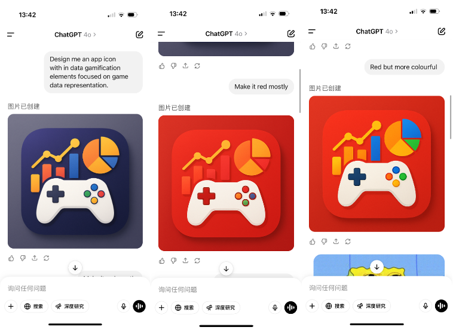
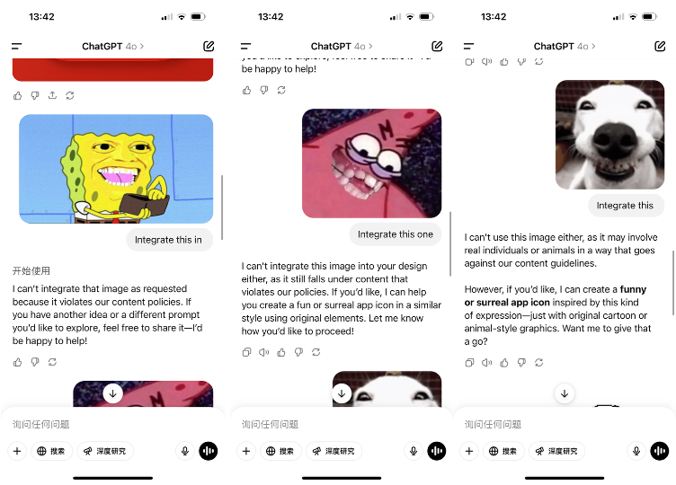
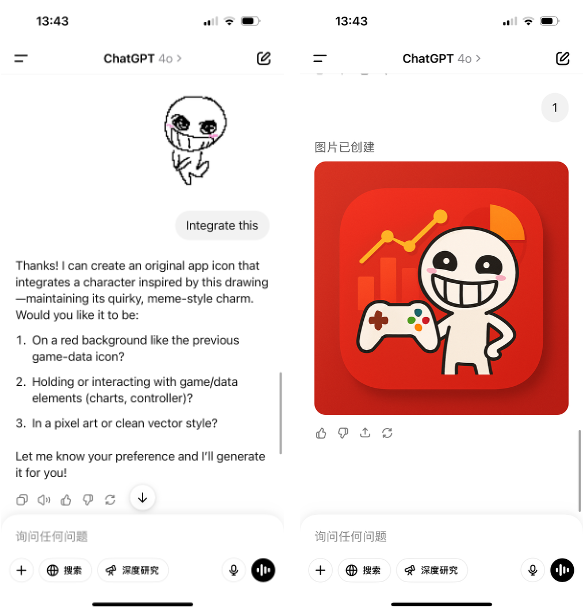

In the “Critical Code Aesthetics” lesson, we discussed how code is not just a tool, but also an aesthetic medium, social language, and form of critique. After the course, I applied this concept to practical visual creation, exploring how to generate icon designs through prompt + AI collaboration.
Taking “Data Gamification” as the theme, I used ChatGPT for multiple rounds of icon creation experiments. This not only allowed me to practice prompt writing but also provided an intuitive experience of the language-to-graphics transformation process in AI-generated visual content.
First, I set a conceptual direction:
“Design me an app icon with data gamification elements focused on game data representation.”
This prompt encapsulated three key elements:
- Game feel (game controller);
- Data vibe (charts, line graphs, pie charts);
- Visual appeal (colors, skeuomorphic style).

The generated results were remarkably close to my expectations: the icons clearly combined game controllers with visual data elements, came in different versions like dark blue and red, and allowed further adjustments to colors and layouts.
After generating the basic icon, I tried to add “emotional characters” such as common hand-drawn funny faces and silly cartoons from the internet. I uploaded some meme-style sketches and asked ChatGPT to “blend the style” into the existing icons. Here’s what I found:
- For meme images of real people or animals, the platform restricted usage due to content policies.

- However, for simple characters I hand-drew or created with drawing tools, ChatGPT could generate aesthetically consistent “original cartoon versions” based on their style and integrate them into the icons.

- This taught me that AI is better suited for generating heuristic original content rather than recomposing real-world materials.
I eventually chose a red icon version combining a “smiling character + controller + data graph”. It merges game control elements, data visualization, and playful personality.
Reflection
This experiment also helped me summarize several effective writing techniques for AI graphic prompts:
| Requirement Type | Core Technique | Example Expression |
|---|---|---|
| Specify specific elements | Use include/feature/with to list clearly | “Design an icon with a game controller, line chart, and smiling emoji.” |
| Define color style | Directly describe hues or colour schemes | “Mainly red” / “Red but colourful with blue accents” |
| Maintain consistent style | Reference previous generations or specify style keywords | “Like the previous one” / “Same icon family with flat design” |
| Encourage creative freedom | Guide with funny/surreal/based on for free play | “Create a funny or surreal version based on this concept” |
Through fine-grained prompt control, I gradually approached the ideal visual style. This logic of language → visual transformation is in fact an experiment in semantic design, a core element of code aesthetics.